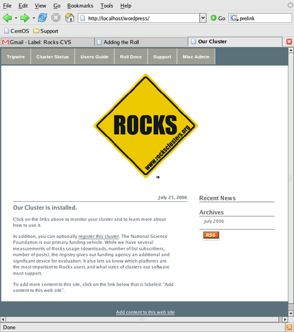
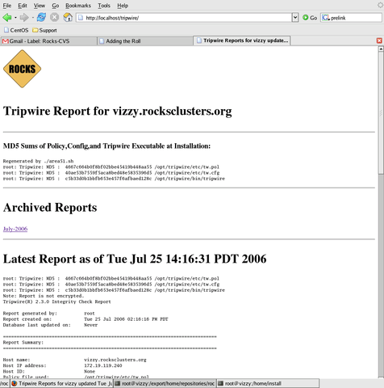

Area51 Roll: Users Guide: 
| ||
|---|---|---|
| Prev | Chapter 3. Using the Area51 Roll | Next |
Tripwire is configured to automatically scan the files on your frontend daily. This is accomplished via cron. To test the tripwire cron script, execute:
# /etc/cron.daily/tripwire |
A Tripwire tab on your cluster's home page will indicate that tripwire is installed.

When the tripwire cron job runs, clicking on the tab will result will bring up the most recent tripwire report and a set of monthly archives of previous reports

When this cron script runs successfully, tripwire sends mail to root (default). The cron script also creates a web page which shows the most recent tripwire report and web-archives of previous reports.
To view the mail message, execute mail, then hit return at the & prompt. You'll see a mail message that looks similar to:
[root@rocks22 root]# mail Mail version 8.1 6/6/93. Type ? for help. "/var/spool/mail/root": 1 message 1 new >N 1 root@rocks22.sdsc.ed Thu May 20 22:37 210/8552 "Tripwire: Daily repor" & Message 1: From root@rocks22.sdsc.edu Thu May 20 22:37:42 2004 X-Original-To: root@rocks22.sdsc.edu Delivered-To: root@rocks22.sdsc.edu Date: Thu, 20 May 2004 22:37:41 GMT From: root <root@rocks22.sdsc.edu> To: root@rocks22.sdsc.edu Subject: Tripwire: Daily report from rocks22.sdsc.edu Parsing policy file: /opt/tripwire/etc/tw.pol *** Processing Unix File System *** Performing integrity check... Wrote report file: /opt/tripwire/db/report/rocks22.sdsc.edu-20040520-223648.twr Tripwire(R) 2.3.0 Integrity Check Report Report generated by: root Report created on: Thu 20 May 2004 10:36:48 PM GMT Database last updated on: Never =============================================================================== Report Summary: =============================================================================== Host name: rocks22.sdsc.edu Host IP address: 127.0.0.1 Host ID: None Policy file used: /opt/tripwire/etc/tw.pol Configuration file used: /opt/tripwire/etc/tw.cfg Database file used: /opt/tripwire/db/rocks22.sdsc.edu.twd Command line used: /opt/tripwire/bin/tripwire --check --cfgfile /opt/ tripwire/etc/tw.cfg |
To have tripwire email its report to a different email address. Simply run the /opt/tripwire/etc/tw-email-to -set address1 [address2]. For example, say you want to email the tripwire reports to go to wopr@wargames.org and root.
/opt/tripwire/etc/tw-email-to -set wopr@wargames.org root@`hostname` |
To view the set of addresses for the Tripwire Daily Report
/opt/tripwire/etc/tw-email-to |